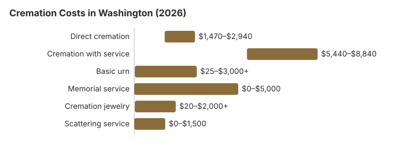

Cremation Costs in Washington (2026)
Cremation in Washington costs less than burial, yet providers can still be thousands of dollars apart. In Washington, direct cremation starts around $2,100 while cremation with a full service averages $6,800, a gap of $4,700. Below we cover what each price tier includes and how a 76% cremation rate shapes the market. One cost a Washington family can usually avoid is a cemetery niche, since RCW 68.50.130 lets cremated remains be placed on private property with the owner's consent, or on public lands or waters with approval from the agency in charge.
Cremation Choices Offered in Washington
Direct Cremation
- Most affordable cremation option
- No viewing or ceremony before cremation
- Body transferred directly to crematory
- Remains returned to family
- Memorial service can be held later
Cremation with Service
- Traditional funeral service before cremation
- Viewing or visitation possible
- Ceremony at funeral home or church
- Typically includes basic urn
- More similar to traditional funeral experience
Cremation Cost Breakdown
| Item | Average Cost | Range |
|---|---|---|
| Direct cremation | $2,100 | $1,470 – $2,940 |
| Cremation with service | $6,800 | $5,440 – $8,840 |
| Basic urn | $50 – $300 | $25 – $3,000+ |
| Memorial service | $500 – $2,000 | $0 – $5,000 |
| Cremation jewelry | $50 – $500 | $20 – $2,000+ |
| Scattering service | $200 – $600 | $0 – $1,500 |
Methodology note: These figures are our estimates, not a survey of local providers, and they are not a quote or professional advice. See how we calculate them or read the full disclaimer.

Checks to Make Before a Cremation in Washington
When considering cremation in Washington, keep these important points in mind:
- Authorization: Written authorization from the legal next of kin is required; the Washington rules are in RCW 70.58A.210.
Ways to Spend Less on Cremation in Washington
Cremation costs in Washington can be reduced with these strategies:
- Compare at least 3 cremation providers in Washington: Request written General Price Lists.
- Choose a flat-rate direct cremation provider: Washington has a mature, competitive direct cremation market. Flat-rate providers in and around Seattle publish transparent pricing and rarely leave much room to negotiate lower; pick on turnaround and reputation rather than haggling.
- Look into outdoor scattering options: Private land (with permission), Pacific scattering services, national forests with a free permit, and several Washington state parks allow ash scattering.
- Check assistance programs: Veteran benefits, Medicaid assistance, and other programs may cover part or all of a Washington cremation bill.
Regional Context for Cremation in Washington
Washington's 76% cremation rate is among the highest in the nation, which means the local market is mature and competitive. Direct cremation providers in and around Seattle advertise transparent, flat-rate pricing and can often complete the process in under a week. The $2,100 price point in Washington reflects real market competition, not a rack rate; there is rarely much room to negotiate lower.
Cremation Resources
- Funeral Consumers AllianceNonprofit advocacy: compare cremation providers
- Cremation Jewelry GuideMemorial keepsakes and remembrance options
- Cremation vs. Burial CostsSide-by-side cost comparison
- Pet Cremation CostsOptions and prices for pet cremation and memorials
- Final Expense InsuranceCoverage options to help pay for cremation costs
Compare Funeral Costs
- Average Funeral Cost in 2026National cost breakdown with real prices
- Cremation vs. Burial Cost ComparisonSide-by-side price comparison to help you decide
- Funeral Cost BreakdownEvery line item explained: know what you're paying for
- Cheapest Funeral OptionsLower-cost alternatives, with typical price ranges
- Direct Cremation: Most Affordable OptionNFDA 2023 median $2,645 with a family-supplied container (latest available)
- How to Compare Funeral PricesStep-by-step guide to getting the best price
Frequently Asked Questions
What does cremation cost in Washington in 2026?
Cremation in Washington runs from roughly $2,100 for the simplest direct option up to about $6,800 when paired with a viewing or ceremony.
Which cremation options exist in Washington?
Washington providers typically offer three tiers. Direct cremation at $2,100 is the simplest Washington tier: no service or viewing, the body cremated and the ashes returned. Traditional cremation at $6,800 adds a full funeral home service before the cremation, $4,700 more than the direct tier in Washington.
What are Washington's cremation regulations?
The core rule comes from RCW 70.58A.210. Washington sets no waiting period before cremation; families may act without a funeral director once the death is registered and a burial-transit permit issued.
Under the FTC Funeral Rule, a Washington provider that offers direct cremation must make an alternative container available, so you are not required to buy a casket.
Complaints about how a crematory or funeral home handled these steps go to the Washington State Department of Licensing (360-664-1555).
Is ash scattering legal in Washington?
National park scattering often requires a free permit. Check Washington local ordinances and any park-specific rules before proceeding. Some Washington families choose a columbarium niche, urn burial (including at Tahoma National Cemetery for an eligible veteran), or memorial jewelry to avoid the permitting question entirely.
Why do so many Washington families choose cremation?
Washington combines the factors NFDA links to high cremation rates. About 37% of Washington adults are religiously unaffiliated, among the highest shares in the country (Pew Research Center, 2023-24 Religious Landscape Study), and only 54.6% of U.S.-born residents live in the state where they were born (Census Bureau, 2023 American Community Survey).
Washington has also widened the options. In 2019 it became the first state to legalize natural organic reduction, or human composting, and it also allows alkaline hydrolysis; both took effect May 1, 2020 (ESSB 5001; RCW 68.50.110). The 76% rate on this page compares with NFDA's 63.4% national projection for 2025.
How long does cremation take in Washington?
In Washington, the cremation process itself takes 2 to 3 hours. Ashes are usually ready for pickup or delivery 3 to 7 business days after the cremation, which cannot take place before the Washington cremation permit (Washington sets no fixed waiting period; RCW 70.58A.210). Direct cremation ($2,100) has the shortest timeline because no viewing or ceremony is involved; Washington sets no minimum wait, so the permit is the main step (RCW 70.58A.210).
Do I have to skip the service if I choose cremation in Washington?
Washington providers offer cremation with a full service (visitation, ceremony, and then cremation instead of burial) for about $6,800. Of the Washington prices above, only direct cremation at $2,100 omits the service entirely.
More for Washington
Cremation rules and help in Washington
Crematories and the funeral homes that sell cremation in Washington answer to the Washington State Department of Licensing (360-664-1555).
Because Washington is not on the Funeral Consumers Alliance list of nine states that restrict family-directed care, the family may deal with a Washington crematory directly once the cremation permit has been issued.
Timing and permits: Washington sets no waiting period before cremation; families may act without a funeral director once the death is registered and a burial-transit permit issued (RCW 70.58A.210).
Washington counties handle disposition of unclaimed indigent remains (RCW 36.39.030); King County, for example, runs an indigent remains program through its medical examiner. (Source: RCW 36.39.030; RCW 73.08.070.) The $255 Social Security death payment to a qualifying Washington spouse or child would cover only part of the $2,100 direct cremation estimate above.
Cremated remains of an eligible Washington veteran can be placed in a VA national cemetery columbarium or in-ground site at no charge for the space. Options in Washington include Tahoma National Cemetery (425-413-9614), Vancouver Barracks National Cemetery (503-273-5250, cremated remains only), and Washington State Veterans Cemetery - Medical Lake (509-299-6280). See cem.va.gov.
Next steps for a cremation in Washington
- Get written cremation prices from at least two Washington providers and compare what each direct cremation price includes.
- Ask which office signs Washington cremation permits where the death occurred, and how long it takes.
- Ask the Washington county about its indigent remains program before booking a cremation.
- Note the board's number, 360-664-1555, before you pay a cremation provider.